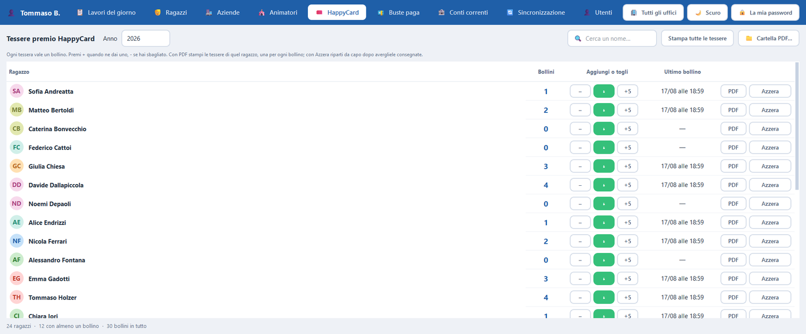

Le tessere premio a bollini. La tessera vera è di carta e sta in mano al ragazzo; qui si tiene il conto, un movimento alla volta.
PdRManager — HappyCard
{kind=link}

Che cosa fa che cosa
I comandi
| Comando | Che cosa fa |
|---|---|
| +1 / −1 | Aggiunge o toglie un bollino. Sotto zero non si scende. |
| Stampa le tessere | Dieci per foglio A4: ogni tessera vale un bollino, sempre uno. |
| Azzera | Riporta a zero la tessera, di solito perché è stata consegnata. |
Dal primo clic
Come si fa, passo per passo
- Clicca sulla scheda «HappyCard».
- Ogni riga è un ragazzo, con quanti bollini ha adesso.
- Per dargliene uno, clicca «+1» sulla sua riga. Per toglierlo, «−1». Sotto zero non si scende.
- Quando è ora di consegnare le tessere, clicca «Stampa le tessere»: esce un PDF con dieci tessere per foglio.
- Ogni tessera vale un bollino solo: chi ne ha sette riceve sette tessere. Non è un errore.
- Dopo aver consegnato, clicca «Azzera» sulla riga di quel ragazzo per ripartire da zero.
Se non funziona: Se i bollini di un ragazzo non compaiono, controlla l'edizione in alto: i bollini appartengono all'anno.